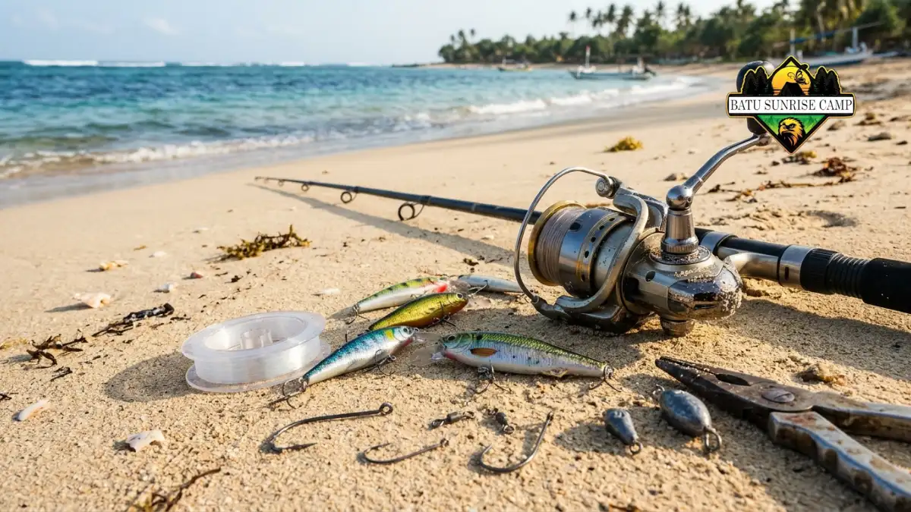

Alat pancing untuk camping pantai adalah paket joran, reel, senar, kail, umpan, dan perlengkapan pendukung yang ringkas, tahan air asin, serta aman dibawa berkemah.
- Paket dasar terdiri dari joran spinning, reel, senar, leader, kail, pemberat, umpan, dan tackle box.
- Bahan tahan karat dan ukuran ringkas lebih penting daripada jumlah alat yang banyak.
- Kondisi pantai, yaitu berpasir, berkarang, atau berombak besar, menentukan jenis joran dan pemberat.
- Perawatan sederhana setiap hari, terutama membilas dengan air tawar, memperpanjang umur alat.
- Cek prakiraan gelombang BMKG sebelum memancing agar aktivitas tetap aman.
Mengapa Alat Pancing Perlu Disiapkan Khusus untuk Camping Pantai?
Camping pantai menuntut alat pancing yang ringkas, tahan karat, dan fleksibel karena pemancing menghadapi angin, pasir, air asin, dan keterbatasan ruang bawaan selama bermalam.
Memancing sambil berkemah berbeda dari memancing singkat di dermaga. Pemancing biasanya berada di lokasi lebih dari satu hari, sehingga alat terkena embun, percikan air laut, dan pasir secara terus-menerus. Alat yang tidak siap cepat berkarat, macet, atau hilang di tengah pasir.
Minat terhadap memancing rekreasi juga terus besar. Menurut American Sportfishing Association (ASA) dalam 2026 Special Report on Fishing, sekitar 57 juta orang Amerika Serikat, atau kurang lebih 18 persen penduduk berusia enam tahun ke atas, memancing sepanjang 2025.
Laporan yang sama mencatat total kunjungan memancing naik 3 persen menjadi 918 juta kali. Data ini berasal dari survei Amerika Serikat, tetapi menunjukkan bahwa memancing sebagai kegiatan rekreasi bersifat stabil dan luas.
Di Indonesia, faktor keselamatan juga ikut menentukan pilihan alat. BMKG pada peringatan dini Mei dan Juni 2026 menyebut angin di atas 15 knot dan gelombang di atas 1,25 meter berisiko bagi perahu nelayan. Pemancing pantai yang bertahan di tepi air perlu memakai batas ini sebagai acuan untuk menunda memancing.
Apa yang Dimaksud dengan Alat Pancing untuk Camping Pantai?
Alat pancing untuk camping pantai adalah seperangkat peralatan memancing yang dipilih agar mudah diangkut, tahan lingkungan air asin, dan cukup serbaguna untuk memancing dari bibir pantai.
Primary entity artikel ini adalah paket alat tersebut, bukan satu produk tertentu. Paket ini ditujukan bagi pemancing rekreasi yang berkemah di pesisir, termasuk keluarga, kelompok teman, dan pemancing pemula. Paket digunakan ketika pemancing menetap di pantai selama beberapa jam sampai beberapa hari.
Manfaat utamanya adalah efisiensi. Satu paket yang tepat membuat pemancing cukup membawa satu atau dua joran untuk beberapa teknik.
Batasannya, paket ringkas tidak dirancang untuk memancing ikan besar di laut dalam atau dari kapal. Risikonya, alat murah tanpa perlindungan karat dapat rusak hanya dalam satu perjalanan.
Apa Saja Alat Pancing Wajib untuk Camping Pantai?
Alat wajib untuk camping pantai meliputi joran, reel, senar utama, leader, kail, pemberat, umpan, tackle box, gunting atau pemotong senar, dan tempat joran.
Berikut penjelasan setiap komponen dan fungsinya.
Joran dan Reel Apa yang Cocok untuk Memancing dari Pantai?
Joran spinning dengan reel spinning umumnya paling praktis untuk pemula karena mudah dipakai, mudah dirawat, dan fleksibel untuk umpan hidup maupun umpan buatan.
Panjang joran pantai umumnya berkisar sekitar 2,4 hingga 3,0 meter agar lemparan cukup jauh melewati ombak pecah. Joran dua bagian atau lebih lebih mudah dibawa dibandingkan joran satu bagian.
Reel spinning ukuran menengah, yang umumnya berada pada kelas 3000 hingga 5000, lazim dipakai untuk pantai. Pilih reel dengan bagian anti karat dan segel yang baik.
Untuk panduan mendalam mengenai rasio gear, uji kelenturan blank joran, dan kapasitas senar air asin, Anda dapat membaca panduan lengkap kami tentang cara memilih joran dan reel untuk memancing di pantai.
Senar, Leader, Kail, dan Pemberat Apa yang Perlu Dibawa?
Bawa senar utama monofilamen atau braided, leader fluorocarbon atau monofilamen, kail berbagai ukuran, dan pemberat dengan beberapa bobot supaya bisa menyesuaikan arus dan ombak.
Monofilamen lebih murah dan lebih lentur. Senar braided lebih tipis dan peka, tetapi lebih mahal dan perlu simpul yang benar.
Leader berfungsi sebagai penyambung yang lebih tahan gesek terhadap karang atau pasir kasar. Kail dengan beberapa ukuran memungkinkan pemancing mengganti umpan. Pemberat dengan bobot ringan dan sedang membantu menyesuaikan kondisi arus.
Umpan Apa yang Praktis Dibawa Saat Camping?
Umpan yang praktis untuk camping pantai adalah umpan buatan seperti jig kecil dan sendok, serta umpan alami seperti udang, cacing laut, atau potongan ikan yang disimpan dingin.
Umpan buatan lebih tahan lama dan tidak berbau, sehingga cocok untuk perjalanan beberapa hari. Umpan alami sering menarik ikan lebih baik, tetapi harus disimpan di cooler agar tidak busuk.
Perlengkapan Pendukung Apa yang Sering Terlupa?
Perlengkapan pendukung yang sering terlupa meliputi tang pelepas kail, gunting senar, sarung tangan, headlamp, kain lap, tempat joran, kantong sampah, dan kotak P3K.
Tang pelepas kail membantu melepas kail dari mulut ikan dengan aman. Headlamp dibutuhkan karena memancing malam hari lazim saat camping.
Kantong sampah dipakai untuk membawa pulang potongan senar dan bungkus umpan karena senar bekas berbahaya bagi satwa pantai.
Bagaimana Cara Memilih Alat Pancing Sesuai Kondisi Pantai?
Pilih alat berdasarkan jenis pantai: joran lebih panjang dan pemberat lebih berat untuk pantai berpasir berombak, serta leader lebih tebal dan kail lebih kuat untuk pantai berkarang.
Kondisi pantai mengubah kebutuhan alat secara nyata. Pantai tempat memancing sebaiknya diamati dulu sebelum memasang rangkaian.

Perlengkapan memancing pantai yang lengkap dan tertata, menampilkan joran, reel, tackle box berisi kail dan pemberat, serta berbagai umpan buatan yang siap digunakan.
Pantai Berpasir Landai
Pantai berpasir landai cocok untuk joran 2,7 hingga 3,0 meter dan pemberat ringan hingga sedang, karena ikan sering mendekat ke palung air di balik ombak pecah.
Lempar umpan melewati garis ombak, lalu biarkan tetap diam di dasar. Gunakan tempat joran dari pipa atau penyangga pasir agar joran tidak jatuh saat ada gigitan.
Pantai Berkarang
Pantai berkarang membutuhkan leader lebih tebal, kail kokoh, dan pemberat yang tidak mudah tersangkut, karena karang tajam mudah memutus senar dan menjepit rangkaian.
Gunakan umpan yang bergerak di permukaan atau tengah air agar tidak tersangkut di dasar. Sepatu antiselip wajib dipakai, karena karang basah licin.
Pantai Berombak Besar atau Berarus Kuat
Pada pantai berombak besar atau berarus kuat, pilih pemberat lebih berat dan kurangi risiko dengan tidak berdiri terlalu dekat air, atau tunda memancing bila kondisi berbahaya.
Pemancing sebaiknya memantau prakiraan gelombang BMKG sebelum berangkat.
Bagaimana Perbandingan Paket Alat Pancing untuk Camping Pantai?
Paket ringkas cocok untuk pemula dan keluarga, paket serbaguna cocok untuk pemancing menengah, dan paket lengkap cocok untuk pemancing berpengalaman yang menetap beberapa hari di pantai.
| Aspek | Paket Ringkas | Paket Serbaguna | Paket Lengkap |
|---|---|---|---|
| Jumlah joran | 1 | 2 | 2 atau lebih |
| Pengguna | Pemula, keluarga | Pemancing menengah | Pemancing berpengalaman |
| Teknik | Dasar | Dasar dan umpan buatan | Beragam teknik |
| Bobot bawaan | Ringan | Sedang | Lebih berat |
| Batasan | Pilihan teknik terbatas | Perlu ruang lebih | Perlu pengangkutan lebih besar |
Parameter penilaian yang dipakai adalah kemudahan, bobot, fleksibilitas teknik, dan biaya. Tidak ada paket yang paling unggul untuk semua orang, sehingga pilihan tergantung pengalaman, jumlah peserta, dan lama berkemah.
Bagaimana Cara Mengemas dan Merawat Alat Pancing Selama Camping?
Kemas alat dalam tas atau tabung joran yang kering, bilas dengan air tawar setelah dipakai, lalu keringkan sebelum disimpan agar karat dan pasir tidak merusak bagian bergerak.
Garam laut mempercepat karat pada kail, reel, dan bagian logam lainnya. Berikut langkah praktis perawatan.
- Bilas joran, reel, dan kail dengan air tawar bersih setelah selesai memancing.
- Lap hingga kering memakai kain, lalu angin-anginkan sebelum disimpan.
- Simpan reel dalam tas atau kantong tertutup agar pasir tidak masuk.
- Pisahkan kail dan umpan dari perlengkapan lain di tackle box yang tertutup rapat.
- Periksa senar dari lecet dan simpul longgar sebelum pemakaian berikutnya.
Letakkan joran pada penyangga selama tidak dipakai, bukan tergeletak di pasir. Hindari mengangkut joran di dalam bagasi yang panas dan lembap dalam waktu lama.
Apa Kesalahan Umum Saat Menyiapkan Alat Pancing Camping Pantai?
Kesalahan umum meliputi membawa terlalu banyak alat, mengabaikan perlindungan karat, memakai senar terlalu tipis untuk karang, lupa pelepas kail, dan tidak mengecek cuaca laut.
- Membawa terlalu banyak alat. Ruang tenda dan kendaraan terbatas, sehingga alat berlebih justru menyulitkan.
- Tidak membilas alat dengan air tawar. Garam yang menempel membuat reel macet dan kail berkarat.
- Salah memilih senar. Senar terlalu tipis mudah putus pada karang atau saat melawan ikan yang kuat.
- Tidak membawa pemotong senar dan tang. Kail yang menancap pada kulit atau ikan sulit dilepas tanpa alat tersebut.
- Mengabaikan cuaca dan gelombang. Kondisi laut yang berubah cepat berbahaya bagi pemancing di tepi air.
- Membuang senar bekas sembarangan. Senar yang tertinggal di pantai dapat melilit burung dan penyu.
Bagaimana Aspek Keselamatan dan Aturan Memancing Rekreasi di Pantai?
Pemancing wajib memperhatikan prakiraan gelombang BMKG, memakai alas kaki antiselip, mematuhi aturan lokal, dan membatasi hasil tangkapan sesuai ketentuan wisata memancing yang berlaku.
BMKG memberi acuan bahwa angin di atas 15 knot dan gelombang di atas 1,25 meter berisiko tinggi bagi perahu nelayan, sehingga pemancing pantai sebaiknya waspada pada kondisi serupa.
Peringatan dini BMKG sepanjang 2026 beberapa kali mencantumkan gelombang 2,5 hingga 4 meter di perairan tertentu.
Dari sisi aturan, Peraturan Menteri Kelautan dan Perikanan Nomor 27 Tahun 2021 menyebut wisata memancing sebagai penangkapan ikan untuk rekreasi, bukan untuk mencari nafkah atau keuntungan.
Aturan itu membatasi hasil tangkapan per kapal paling berat 100 kilogram atau paling banyak 50 ekor untuk setiap kegiatan.
Ketentuan setempat, seperti larangan di kawasan konservasi, dapat berbeda sehingga pemancing sebaiknya menanyakan pengelola pantai.
Kesimpulan
Alat pancing untuk camping pantai sebaiknya ringkas, tahan air asin, dan sesuai kondisi pantai yang dituju.
Mulailah dari paket dasar berisi joran spinning, reel, senar, leader, kail, pemberat, dan umpan, lalu tambahkan perlengkapan pendukung seperti tang, pemotong senar, dan headlamp.
Sesuaikan joran dan pemberat dengan jenis pantai, bilas alat setiap selesai dipakai, dan cek prakiraan gelombang BMKG sebelum memancing. Dengan persiapan ini, camping pantai menjadi lebih aman, lebih nyaman, dan lebih menyenangkan.
FAQ